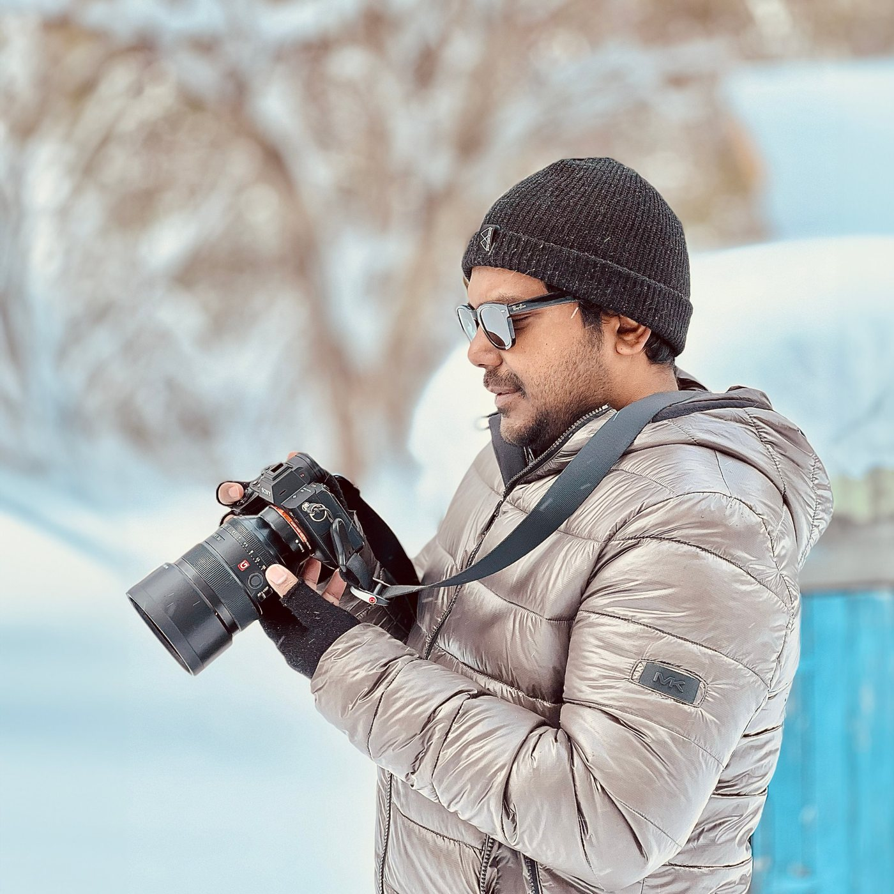
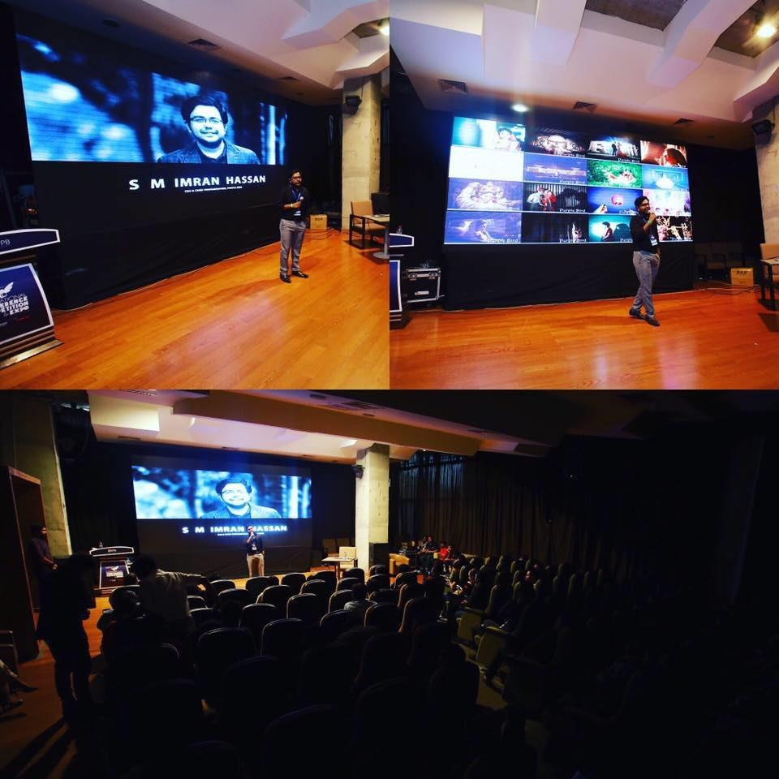
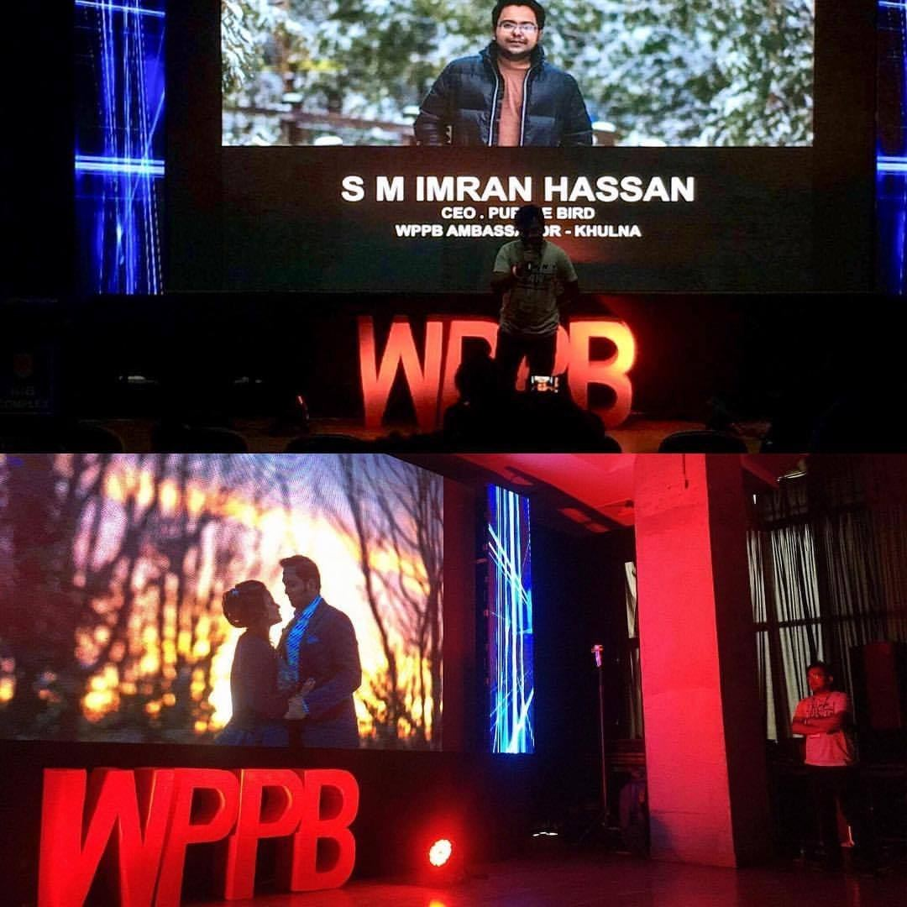
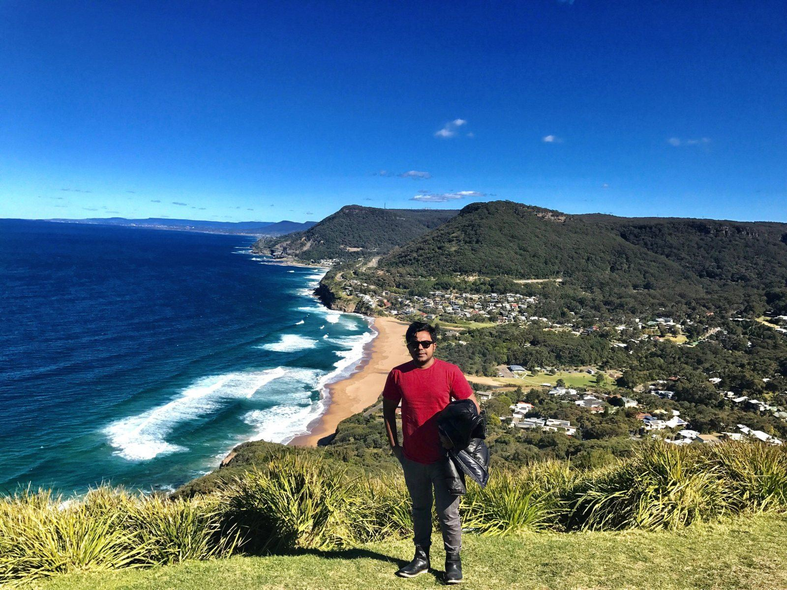
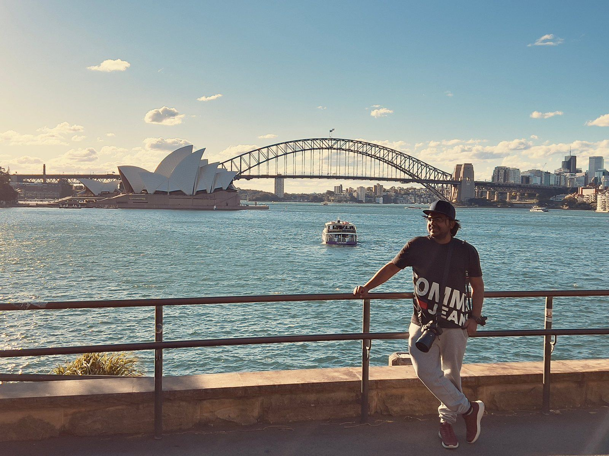

Stay Connected
Write to me directly, book a wedding with Purple Bird Australia, or follow the street work on Flickr.

© S M Imran Hassan / 2026

I am S M Imran Hassan, and for more than fifteen years I have tried to tell the truth of a moment through the quiet language of light.
I come from Khulna, Bangladesh. As a child, while others reached for toys, I was enchanted by the camera itself, by the quiet mechanism that could catch a moment and keep it. That fascination became my most faithful companion. When I finished college, my older brother gave me my first camera, a Fujifilm 5600s, and with it the streets became my classroom. I wandered them for hours, drawn to faces, rituals and the small, unguarded gestures that make up ordinary life.
What began as a hobby slowly became a calling. I studied the craft, gathered everything I could learn, and resolved to reach the very top of it. Convincing my family that photography could be a career took time, but I never stopped making pictures. My first recognition came when one of my photographs was selected for the International Inter University Photography Exhibition (IIUPE), organised by the North South University Photography Club (NSUPC), shown alongside work from 23 countries. Soon after, I won second prize in the Click and Caption Photo Contest organised by Save the Children UK. That moment changed everything. I upgraded my equipment with the prize money, and my family, who had watched with quiet concern, came forward to support me with all their heart.
Wedding photography was still a new idea in Khulna when I decided to make it my profession. I prepared carefully, invested in the right equipment, and in the early days photographed weddings and ceremonies without pay simply to sharpen my eye. As people began to see and share the work online, the assignments followed, and I have never had to look back. In 2015, together with a circle of young and gifted friends, I founded Purple Bird. It grew into a studio with branches in major cities across Bangladesh and its home in Khulna, and we have since been entrusted with a couple of thousand weddings, each one a story of its own.
Purple Bird also grew beyond the camera. The Photography Institute of Purple Bird teaches the craft to new photographers, and Purple Bird Production looks after production work. Together they have created livelihoods for creative people across the country who now practise photography as their profession. At university I founded the Northern University Photography Club (NUBPC), and I have served as Ambassador for Khulna and Joint Secretary of Wedding & Portrait Photographers Bangladesh (WPPB). My photographs have been featured in newspapers including The Daily Star, The Independent and the Daily Jugantor, and exhibited in national and international competitions.


In 2021 I carried the Purple Bird name across the ocean and founded Purple Bird Australia. I began the way I had begun at home: a camera, a few first bookings, and the belief that every wedding deserves to be told honestly, patiently and with heart. Word travelled faster than I could have hoped. Couples recommended us to their friends, families came back to us for their next celebration, and in only a few years Purple Bird Australia has grown into a name that couples across the country trust with the most important day of their lives.
Today I lead a team of Bangladeshi photographers working from Sydney and Wollongong to Adelaide. We photograph weddings, holud and mehndi nights, engagements, receptions and family celebrations of every scale, from grand modern receptions to the intimate grace of traditional ceremonies. Many of our couples share our roots, and we understand the rituals, the colours and the emotions of a South Asian wedding from the inside. Just as many come from every other culture that makes Australia home, and each of them receives the same care. To see our wedding work, visit Purple Bird Australia or follow @purplebirdphoto.au on Instagram.
The street, however, has never let me go. Whenever time allows, I return to it with my camera, keeping faith with the child who first fell in love with this craft. It taught me to wait patiently for the honest second before it disappears, and that patience is what I bring to every wedding and every portrait I make. Photography is the air I breathe. I cannot imagine a day without it, and through it I hope to keep spreading something good, for as long as I can hold a camera.
If you are planning a wedding, or have a project in mind that you would like to bring to life, I would be glad to hear from you. Write to me at Photographybyimran@gmail.com.


Write to me directly, book a wedding with Purple Bird Australia, or follow the street work on Flickr.
© S M Imran Hassan / 2026